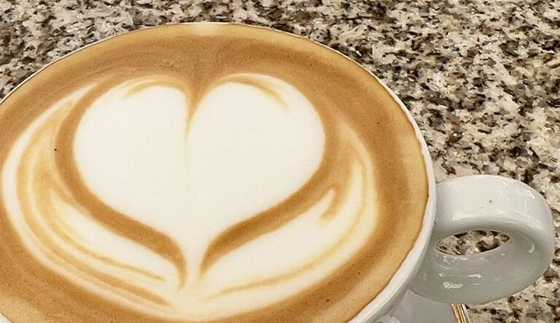
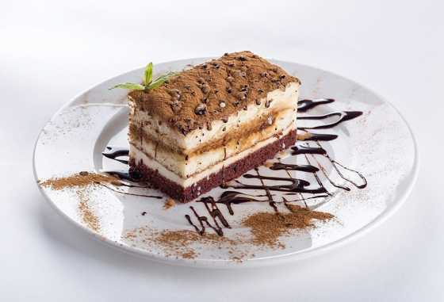
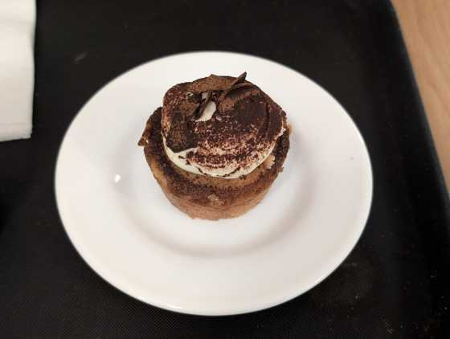
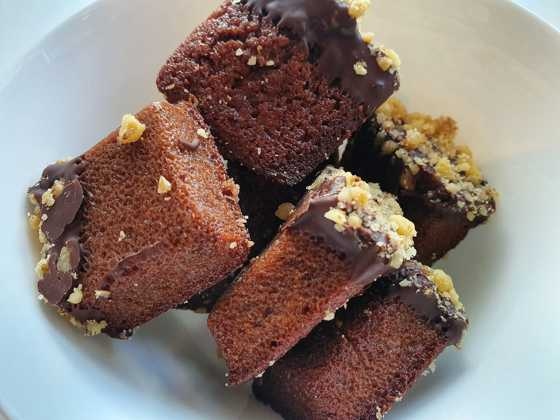
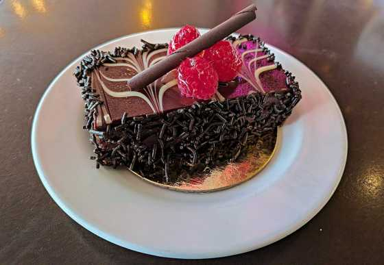
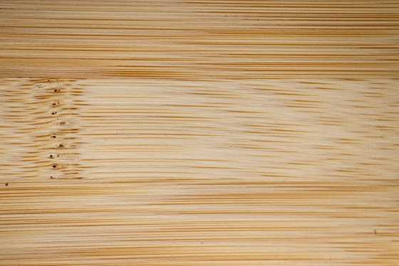
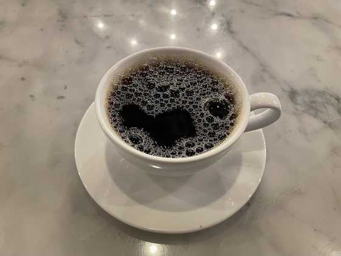
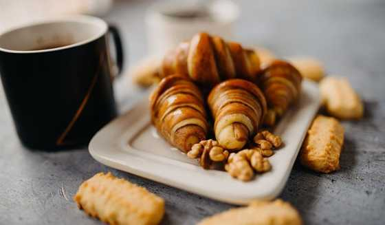
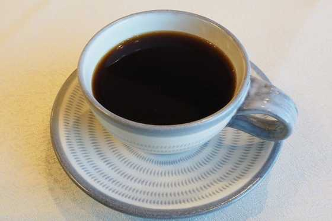
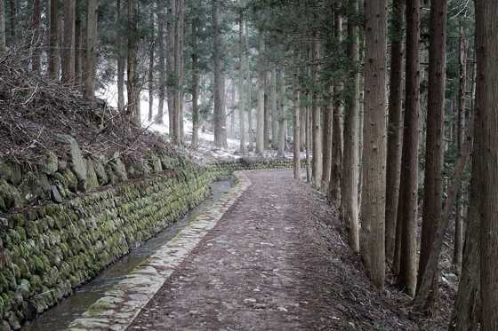

木曽福島 / コーヒースタンド
マルクトコーヒースタンド
市場のように、ふらりと立ち寄れる一杯を。
店名の「マルクト」はドイツ語で「市場」の意とされています。コーヒーとパニーノ、焼き菓子を目当てに、気軽に立ち寄れる場所を目指しているお店です。
メニュー
紹介記事などで確認できた範囲の内容です。メニューは日によって変わるとされています。価格・提供時間は準備中です。






口コミ(イメージ例)
以下は制作側が作成したイメージ例で、実際のお客様の声ではありません。
イメージ例
買い物のついでに寄って、温かいコーヒーとパニーノでひと休み。肩の力が抜ける時間でした。
イメージ例
日替わりの焼き菓子を選ぶのが楽しいです。木のスプーンもほっとします。
イメージ例
少し奥まった場所にあって、静かに過ごせました。また木曽に来たら立ち寄りたいです。
お店について
2021年12月18日、木曽福島にオープン。名古屋から木曽町開田へ移住されたご夫妻が営むコーヒースタンドと紹介されています。空き家を探して開田で暮らし始め、その後、木曽福島で店舗の物件を見つけてオープンに至ったそうです。
お店はAコープの裏手、駐車場から入った少し奥まった場所にあり、古い梁とあたたかな照明、手書きのメニューが紹介されています。店内には薪ストーブも導入されています。木のスプーンと木のストローを使っているとも紹介されています。
店名の由来や想いの詳細は確認できていないため、ここでは載せていません。





アクセス・店舗情報
- 住所
- 〒397-0001 長野県木曽郡木曽町福島2858-4
- 電話
- 準備中
- 営業時間
- 準備中
- 定休日
- 準備中
- @markt_coffeestand
写真クレジット
縮小・切り抜きなどの加工をしています。
- images/6e02a705_cups.jpg:Bex Walton / CC BY 2.0
- images/13c63d75_cafe-02.jpg:Ssu(Cup of coffee on café table) / CC BY-SA 4.0
- images/134411f2_cafe_07.jpg:Kgbo(Hearts in latte art) / CC BY-SA 4.0
- images/2b81406f_cafe_15.jpg:Shixart1985 / CC BY 2.0
- images/824c09dc_cake.jpg:Daria Yakovleva / CC0 1.0
- images/4798dffc_p02.jpg:Ka23 13(Cup and saucer) / CC BY-SA 4.0
- images/toast.jpg:Daderot(Toasted oatmeal bread with butter and apple butter) / CC0 1.0
- images/mocha-cake.jpg:Andy Li(Mocha Cake) / CC0 1.0
- images/financier.jpg:Syced(Chocolate financier) / CC0 1.0
- images/choco-raspberry.jpg:Funknendai(Chocolate raspberry dessert) / CC0 1.0
- images/wood-grain.jpg:Bango Textures(Wood Texture Background) / CC0 1.0
- images/50466783_forest-path.jpg:Yiannis Theologos Michellis / CC0 1.0
- images/a8550532_red-maple.jpg:Raita Futo(Momiji) / CC BY 2.0
- images/e0ad15b8_mist-01.jpg:Koichi Hayakawa / CC BY-SA 2.0